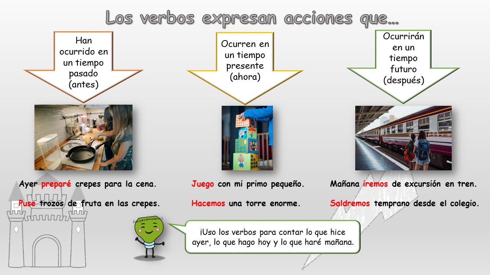

1. Los tiempos verbales
¿Has leído ya el cuento titulado Lumen Franky? Haz clic aquí para descargar e imprimir el relato.
A Lumen le suceden muchas cosas en su viejo castillo, pero él es capaz de hacer mucho más para salvar a sus amigos.
Fíjate en estas expresiones:
- “(Lumen)... había empezado a hacer experimentos para divertirse”.
- “El joven Lumen acurrucó a todas sus fantásticas criaturas”.
- “El doctor Lumen comenzó a cambiar de color…”.
¿Qué hace Lumen en cada situación? Pues, hacer experimentos, acurrucar a sus criaturas, cambiar de color. Esas palabras que están en negrita y que sirven para expresar lo que hace Lumen se llaman verbos.
Los verbos son palabras que se utilizan para decir una actividad o acción.
A continuación proporcionamos un video explicativo sobre los verbos que te ayudarán a realizar las actividades que os proponemos.
Según cuándo ocurre esa acción, el verbo puede ir en diferentes tiempos: pasado, presente o futuro.
